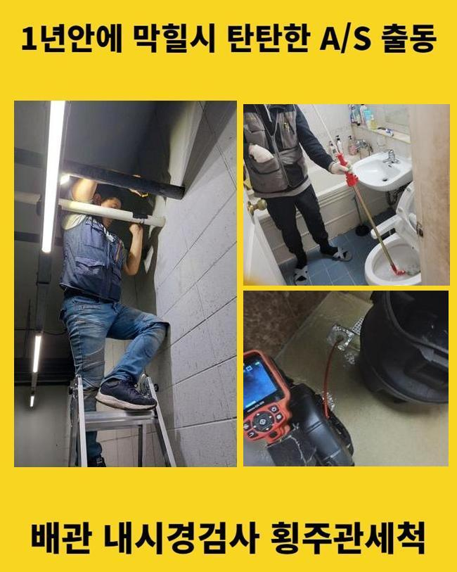
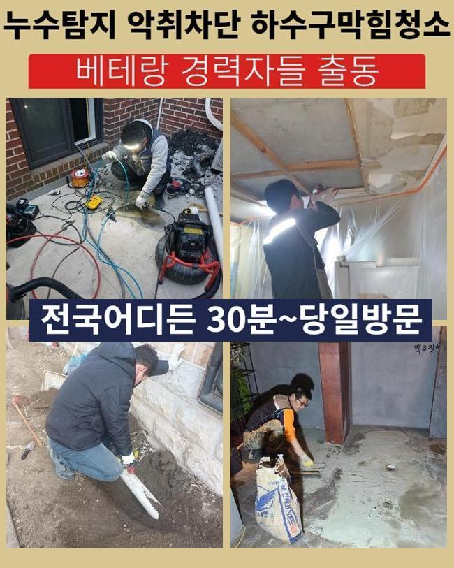
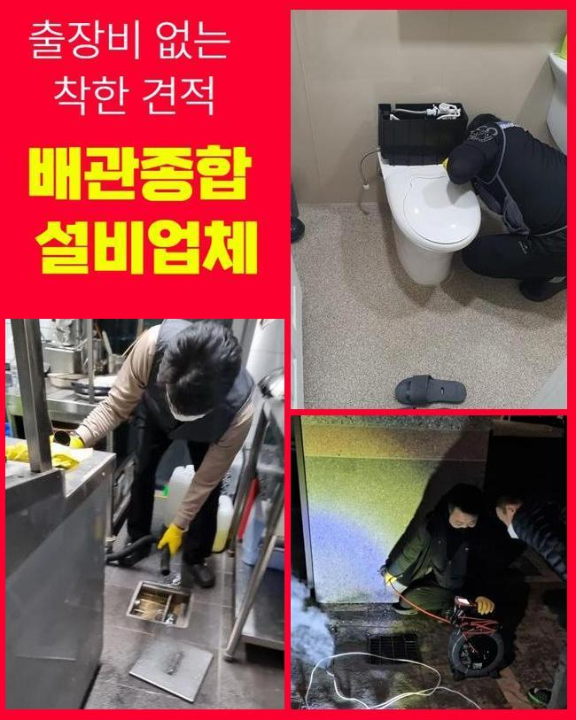
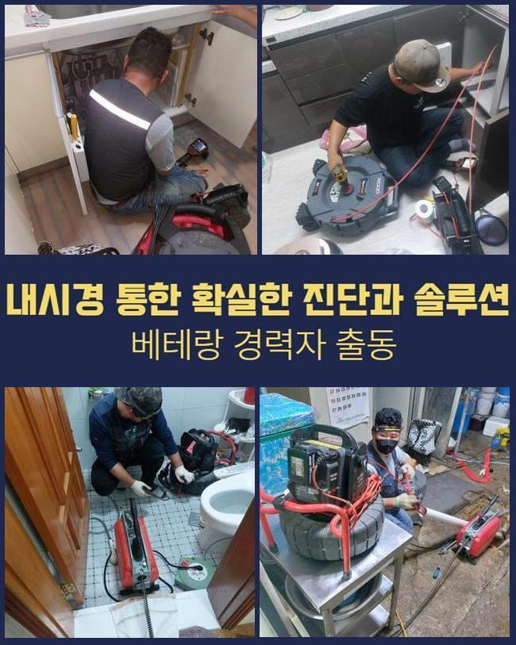
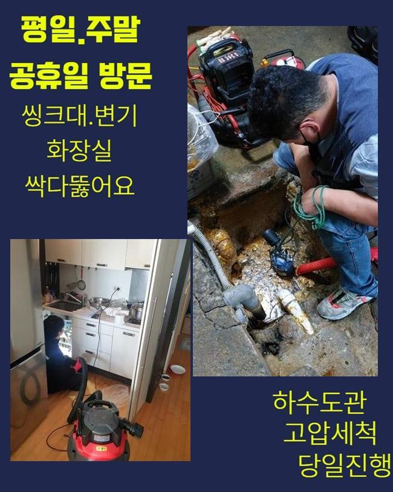
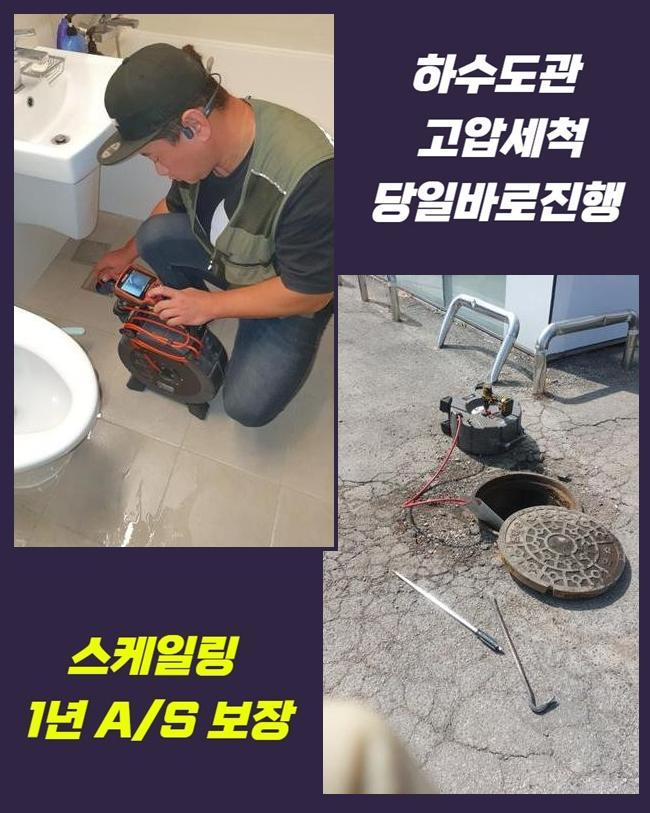
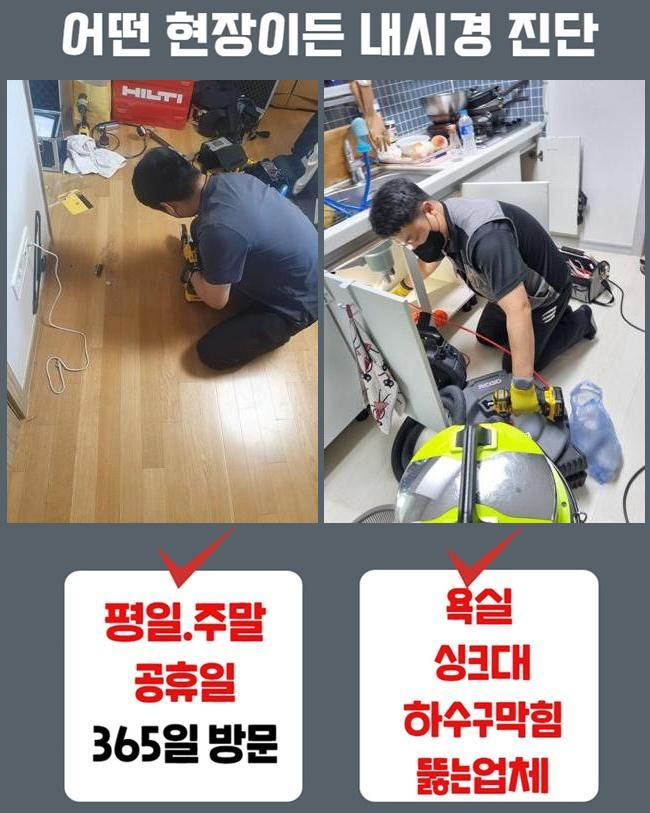

🏠 군포동오수관막힘 궁내동 하수구뚫어주는업체 배관공사
용인 하수구막힘 전문 시공 후기

📋 작업 개요
- 위치: 용인
- 서비스 유형: 하수구막힘, 배관막힘, 역류해결, 뚫는업체, 배관청소, 고압세척, 설비공사, 악취차단
- 작업 일시: 2025. 1. 27. 15:58
- 업체명: 하수구수사대 (010-5615-2118)
🔍 문제 상황
군포동오수관막힘 궁내동 하수구뚫어주는업체 배관공사
높은 건물에서 하수구의 고장이 벌어졌다는 이야기를 듣고 보완을 해드리고자 작업지로 향했습니다
단층 세대가 아니라면 내부 장소마다 설치된 배관들이 한곳으로 모이는 형상을 하고 있는 건물들이 상당히 많아요
낱개의 한 배관에서 중단과 마비가 일어난다면 다른 곳까지 중단돼서 다수의 세대에서 불편을 느낄 때도 많습니다
이번 시공을 했던 곳은 다수의 상가들이 입점한 상가였는데 예기치 않게 찾아온 하수구 곤란으로 영업을 할 수 없어서 불편감과 동시에 경제적 곤란까지 엎친데 덮친 격이었습니다
많은 점포가 운영되는 건물에서 하수 고장이 하루가 멀다하고 나타나면 여러가지 불편함을 낳을 수 있는 부분이므로 굼뜨게 움직이지 않고 스케줄에 맞춰 해당 장소로 갑니다
도착 후에는 손상이 강력한 장소먼저 들러서 유속이 얼마나 느려졌는지 확인해봐요
배수 테스트를 설명드리자면 물을 수압이 강하게 내린 다음 배관 아래로 이 수돗물이 나가는 스피드를 테스트해서 성능을 검토하는건데요
아래로 향하는 물의 유속이 느릿느릿해진 게 분명했고 중간중간 흐름의 끊김이 문득문득 스쳐간다는 사실을 직접 관측할 수 있었는데요
막힘으로 인한 여러 증세가 야기됐다는 점은 배관의 파이프라인 내에 굉장한 양의 오염원들이 둥지를 틀었을 것이 눈에 선했습니다

🔎 원인 분석
💡 전문가 진단: 정밀 진단 장비를 사용하여 슬러지의 고착 여부를 판명하고 타격/세척 작업을 실시했습니다.
누적된 오염물질을 올바르게 소강시키지 못할 경우에는 다른 파이프라인 역시 피해가 확대될 수 있는 부분이라 작업의 진행도를 올렸어요
하수구 장애를 초래하는 원인들은 물이 나가는 통로를 메꿔버린 이물질이 대부분이니 이것들을 모조리 세척을 거쳐야 정상화가 될 것입니다
수돗물을 실내에서 틀게 되면 불순물이 만들어지게 되는데 물과 혼합된 채 방출이 되어버린다면 한 파트에 접착돼서 물길을 차단하게 됩니다
의도적으로 고형화된 물질들을 흘려보내는 것 이외에도 중금속이나 석회 성분 그리고 미네랄 성분이 고착화되기도 해요
관로 안을 살펴보니까 체모나 기름 덩어리처럼 물살에 딸려간 이상물질들이 자리하고 있었는데요
얽히고 꼬이다가 끌어당기는 힘까지 생긴다면 쉽게 제거되지 않을 수 있습니다
물이 나가는 길목을 차단하면 깊숙한 곳에서 부패된 물의 역류도 맞이해야만 하는 상태까지도 악화될 수 있습니다
배관 내부의 물에 담겨있다면 더 빠르게 썩어나갈 확률이 매우 우세하며 부패과정에서 유발되는 냄새가 같이 올라와서 고정적인 집냄새가 되어버립니다
물을 이동시키는 배관은 습도가 매우 높게 유지되니 이물질의 부패도 스피드있고 두통을 유발하는 냄새도 풍겨져요
오물이 쌓인 쪽들이 하나 이상일 수 있으니 전체적인 점검이 필수입니다
한곳만 막혀있다면 석션장치만 가동시키더라도 막힌 하수를 뚫어낼 수 있습니다

🔧 작업 과정
틈새가 많은 모양새이거나 배관들이 여러개 모여있을 땐 흐름을 봉인하는 포인트들이 꽤 여러개 보이기도 합니다
배관시스템의 대략적인 구조와 어떤 물질들로 이뤄진 장애요소인지 사전 조사를 해줘야 합니다
연거푸 물을 붓더라도 물길이 도로 나오지 못하면 작은 틈도 없이 꽉 막혔다거나 딱딱하게 말라붙었을 가능성이 커요
간단한 사안을 훌쩍 넘은 막힘을 해결해 내기 위해서는 배수장애를 유발한 대상을 찾아서 덜어내야 합니다
이물질의 부피와 같은 상황에 대한 변별력이 있어야만 원활한 작업 흐름을 그릴 수 있습니다
관측을 위해 넣는 내시경은 깊고 어둑해서 안보이는 배관을 곧바로 중개를 해주는 활용도가 좋은 관측장치로 말라붙은 오염원의 특징을 알아차리게 도와줍니다
내시경을 틈틈이 넣어서 모니터링을 하면 청소가 다치는 부위는 없는지 신중함을 기할 수 있어서 하자나 재발을 줄일 수 있겠죠
문제가 빚어진 배관 안의 모양을 가늠하기 위해서 혹은 앞선 작업이 깔끔히 끝났는지 재점검 하기 위한 목적으로 카메라를 활용합니다
관로 전반을 검토해보았더니 물길이 모이게 되는 메인배관 포함 넓은 범주에 걸쳐서 오물이 밀착된 상태라는 것을 몸소 깨닫게 되었습니다
문제가 심하지 않다면 진동력을 소지한 단단한 와이어 스프링이나 플렉스샤프트를 접목해서 이물질을 소입자로 나눠주면서 문제를 처단할 수 있는 부분이지만요
규모가 큰 옥외 설비의 넓은 범위로 퍼져서 오염원이 자리를 잡았으면 극적인 개선을 기대할 수는 없습니다
넓다보니 그만큼 이물질이 무궁무진하게 성장하니 작은 석션기만 돌려서는 수습자체도 정말 힘들 것입니다
사이즈와 규격이 큰 편이라면 소방호스처럼 물을 쏴주는 고압세척기의 힘을 빌리는 솔루션이 적절할 것이빈다
이 기법은 배관의 직경에 딱 맞는 노즐을 장착하여 물을 발사하는 원리인데 딱딱하게 굳어버린 이물질까지 모두 삭제시킵니다
과거에 설치된 배수로는 내구성이 약할 때가 많아서 작업 강도를 정하는 단계를 철저히 수행합니다
하수구를 타격하기 전에 관로가 얼마나 견고한지에 대해서도 사전검진을 충분히 거친 후에 하수구 뚫음과 청소를 책임집니다
적절한 강도로 분사하면서 마치 마라톤하듯 배관 청소를 이어갔더니 오랜 시간동안 배관 직경을 막아섰던 지저분한 방해물들을 깨끗하게 덜어낼 수 있었어요


✅ 작업 완료
끝으로 관로의 작은 입자까지도 다 사라졌는지 다시금 이리저리 살펴본 후에는 성능을 되돌리는 전작업이 끝납니다
막히는 기색없이 흘러가는지 통수테스트를 거쳐보고 그밖의 의문점이 있다면 소상히 알려드리고 있습니다
악취가 사라졌는지도 맡아보고 정상적인 이용이 바로 가능할 것인지 거듭 확인하려는 편입니다
여러 기능의 장치들을 복합적으로 쓰며 결함이 완전히 회복되도록 하수구 이슈를 유연하게 부드럽게 풀어나갑니다
하수시설에 연관된 필요하신 게 있으시다면 시간 상관없이 연락 부탁드립니다!




⚠️ 하수구 배관 막힘 예방 및 관리 가이드
- ✅ 머리카락, 비닐, 물티슈 등 물에 분해되지 않는 이물질은 하수구 유입을 절대 금지해 주세요.
- ✅ 하수구 거름망을 씌우고 모여진 이물질은 주기적으로 쓰레기통에 바로 비워주셔야 합니다.
- ✅ 배관 노후가 심할 경우 이물질이 더 쉽게 걸리므로 주기적인 배관 세척(고압세척 등)을 권장합니다.
- ✅ 작업 후 1년 이내 재발 시 하수구수사대에서 무상 A/S 보증 서비스를 제공합니다.
💡 핵심 정리
- 확실한 장비 작업(내시경 점검 및 샤프트 스케일링)으로 원인을 뿌리 뽑습니다.
- 작업 후 1년 이내에 동일한 부위 재발 시 100% 무상 A/S 서비스를 보장합니다.
- 서울 · 경기 · 인천 전 지역에 24시간 언제든 긴급 출동할 수 있도록 항시 대기 중입니다.
❓ 자주 묻는 질문 (FAQ)
🚨 용인 하수구막힘 문제로 고민이신가요?
정확한 원인 진단과 확실한 시공으로 재발 없는 해결을 약속드립니다.
24시간 긴급 출동 | 서울 · 경기 · 인천 전지역 | 1년 내 재발 시 무상 A/S